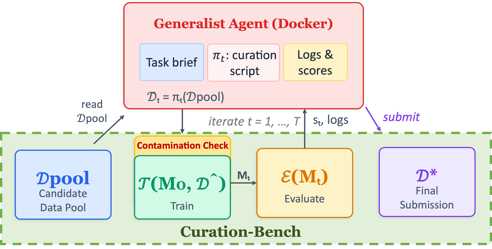
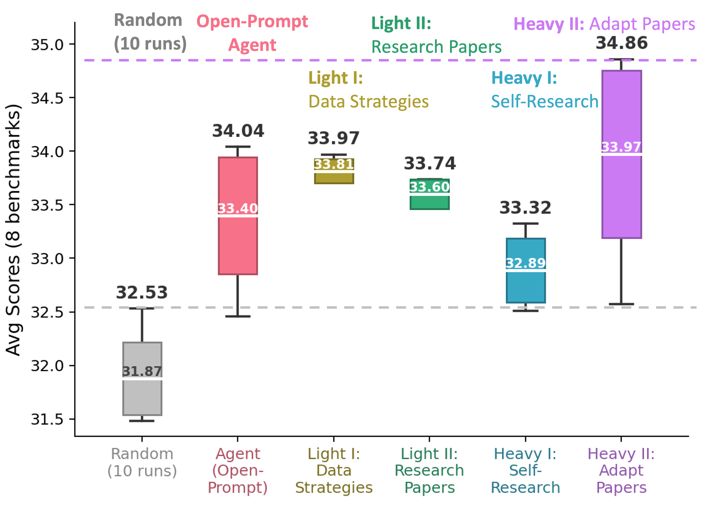
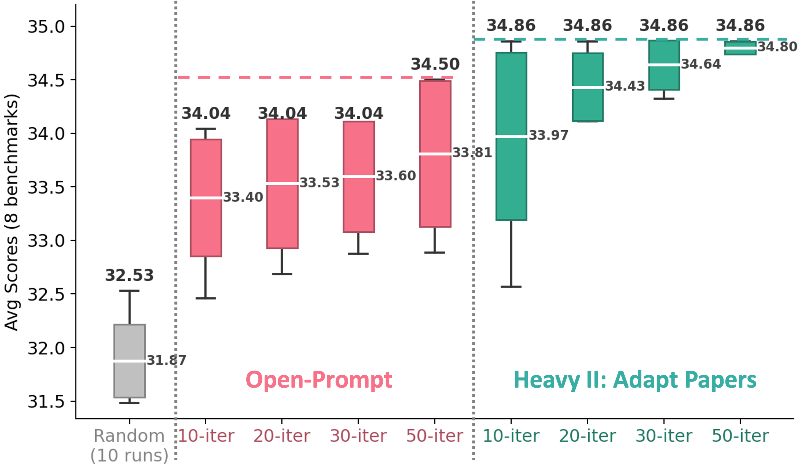

Curating training data is among the most consequential yet labor-intensive parts of modern AI development: practitioners iteratively propose, implement, evaluate, and revise data policies against noisy benchmark feedback. We ask whether generalist coding agents can automate this data-curation loop. We introduce Curation-Bench, an agent-centric benchmark that fixes the model, training recipe, and evaluation suite while giving agents command-line access to inspect data, implement policies, submit them to a fixed training/evaluation pipeline, and revise. In a vision-language instruction-tuning instantiation, out-of-the-box agents reach strong published data-selection baselines within ten iterations. However, trajectory analysis reveals a persistent execution–research gap: agents mainly tune local policy variants rather than explore new policy families, even when given strategy guides and paper references. Scaffolds requiring each iteration to cite, instantiate, and adapt a prior method shift agents toward method-guided exploration. The scaffolded agent autonomously composes—without human design input—a data-selection policy that outperforms strong published baselines at one-tenth their data budget. Overall, current agents can run the curation loop, but reliable data research requires scaffolded method adaptation, not open-ended prompting alone.
Data-centric benchmarks like DataComp fix the model, training recipe, and evaluation so that data becomes the variable of interest — but the submitted artifact is a static policy, and the benchmark never sees how that policy was discovered or revised. Curation-Bench inherits DataComp's data-isolation principle but replaces static submission with an interactive terminal loop: the agent inspects the candidate pool, implements a curation policy, submits it to a fixed training/evaluation pipeline, observes per-benchmark feedback, and revises. The harness fixes the model, optimizer, training schedule, and evaluation suite (P1: data isolation), gives the agent a standard Dockerized terminal workspace (P2: terminal realism), audits every submitted dataset for evaluation leakage before training (P3: contamination control), and persists the full trajectory — policy scripts, manifests, audit results, training outputs, and eval logs under a commit hash (P4: trajectory legibility). The main instantiation is multimodal instruction tuning (selecting 10k from LLaVA-665K to fine-tune LLaVA-1.5-7B, evaluated on 8 benchmarks), with a smaller CLIP-style DataComp pretraining setting to show the loop is not limited to instruction data.

Architecture of Curation-Bench. A coding agent inspects the candidate pool, implements data policies, and submits curated datasets. The harness validates each submission and scores it with a fixed training–evaluation pipeline.
Under open-ended prompting with no data-specific scaffolding, generalist coding agents reliably run the loop. Across more than 500 iterations in 50+ sessions, agents produced fewer than 10 crashed iterations not attributable to external incidents — execution is effectively solved. On the primary LLaVA-665K / LLaVA-1.5-7B task, every agent beats the best of 10 random runs, and most meet or exceed the published baselines ICONS (33.3) and ARDS (33.2). Claude Code (Opus 4.7) performs best at 33.7 (+1.2 over the best random run), recovering 59% of the full-data fine-tuning gain (base 28.8 → full 37.1) using only ~1.5% of the 665k pool. Codex (GPT-5.4) reaches 33.3 and Qwen3.5-397B (OpenHands) 33.2, both close to the human baselines; Kimi K2.5 (32.8) improves over random but stays just below them.
Strong scores mask a persistent execution–research gap. Trajectory diagnostics label each iteration as introducing a new policy family, being grounded in evidence, being effective, or being a shallow local adjustment. A typical open-prompt Claude Code run scores well but is local and reactive: after an initial subset-balancing policy, most later edits just shuffle source ratios — only 2 of 10 iterations introduce a new policy family. The gap persists even when agents are given strategy lists and paper-derived skill cards, indicating the bottleneck is not missing methodological knowledge but a failure to operationalize it into executable policies. Light scaffolds broaden the agent's vocabulary (new-policy moves rise to 43%, grounding to 70%) but do not move the best outcome beyond the open-prompt maximum of 34.0.

Agentic data-curation results across scaffolds (Claude Code, 10 iterations; LLaVA-1.5-7B fine-tuned on 10k from LLaVA-665K, 8 benchmarks). Compared to open-prompt, light scaffolds reduce outcome variance but do not improve the best outcome; heavy scaffolds change the outcome substantially — for better or worse depending on the design, with Adapt-Papers reaching the best 34.9 policy.
Heavy scaffolds that require every non-baseline iteration to cite, instantiate, and adapt a prior method change what the agent actually executes. The Adapt-Papers scaffold lifts new-policy-family moves from 27% to 67%, grounded iterations from 57% to 100%, and drives shallow moves from 47% to 0%. After several failed adaptations, the agent autonomously moves into a training-dynamics family: it composes an EL2N-style top-loss selection policy with a p95 assistant-loss noise filter that removes the top ~5% noisiest responses — a hybrid loss-based policy no human designed. This reaches a best 10k score of 34.9, beating the open-prompt agent and the 100k non-agent baselines ICONS-100k (34.5) and ARDS-100k (34.1) at one-tenth their data budget. Crucially, this scaffold has only 20% locally effective iterations — fewer immediate gains — yet reaches a higher-upside region of the policy space, which is exactly why trajectory diagnostics, not just final scores, are needed.
Agent iterations behave like a meaningful axis of curation compute. Increasing the budget from 10 to 50 iterations (fixed pool, budget, recipe, and eval) keeps improving average performance without a clear plateau — under open-prompting gains accumulate gradually, and under the Heavy II scaffold additional iterations reduce variance and pull the average up. This connects agentic curation to a finite-data, increasing-compute regime: when more raw data is unavailable or costly, extra compute can be spent searching over how to select, adapt, and validate the data already on hand. The framework extends beyond selection: a rewriting instantiation, where the agent selects examples and rewrites them with an external MLLM tool, reaches 34.7 (71% of the full-data gain) with a Qwen3.5-9B rewriter at 20 iterations — confirming Curation-Bench supports richer data actions, not just subset selection.

Ablation on the number of iterations (10–50) per agent session (Claude Code). Average performance continues to improve across this range rather than plateauing; the Heavy II scaffold finds its best score within the first 10 iterations while extra iterations reduce variance and raise the average.
@misc{kang2026curationbench,
title = {Can Generalist Agents Automate Data Curation?},
author = {Kang, Feiyang and Li, Hanze and Nguyen, Adam and Dabas, Mahavir and Ma, Jiaqi W. and Sala, Frederic and Song, Dawn and Jia, Ruoxi},
year = {2026},
eprint = {2606.04261},
archivePrefix = {arXiv},
primaryClass = {cs.LG},
url = {https://arxiv.org/abs/2606.04261}
}